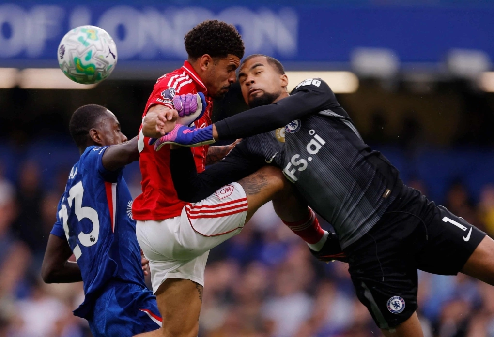

(Thanhnien) - Chelsea tiếp tục chìm trong khủng hoảng khi thua Nottingham Forest 1-3 trên sân Stamford Bridge ở vòng 35 Ngoại hạng Anh, nối dài chuỗi thất bại lên sáu trận tại giải này.
Trước đội hình B của đội đang đua trụ hạng như Nottingham Forest, Chelsea gây thất vọng ngay tại Stamford Bridge. Chủ nhà cầm bóng nhiều nhưng chơi rời rạc, thiếu sức sống và liên tục mắc sai lầm trong phòng ngự. Để rồi khi trận đấu vẫn còn hơn 10 phút, số ghế bị bỏ trống trên khán đài đã đông hơn người xem.
Trận đấu diễn ra lúc 15h thứ Hai 4/5 (giờ London), khung giờ hiếm gặp ở Ngoại hạng Anh, do đây là kỳ nghỉ Early May Bank. Ban tổ chức cũng sắp xếp lịch sớm để Nottingham có thêm thời gian chuẩn bị cho lượt về bán kết Europa League gặp Aston Villa tối 7/5. Vì thế, đội khách thay tới tám vị trí xuất phát. Tuy nhiên, họ vẫn tỏ ra quá mạnh so với chủ nhà.

Tiền đạo Awoniyi (số 9) mừng bàn mở tỷ số cho Nottingham vào lưới Chelsea.
Trận đấu gần như được định đoạt chỉ sau 15 phút đầu. Ngay phút thứ hai, Stamford Bridge chết lặng khi Dilane Bakwa dễ dàng vượt qua Marc Cucurella bên cánh phải rồi treo bóng để Taiwo Awoniyi bật cao đánh đầu tung lưới Robert Sanchez. Theo Opta, đây là bàn sân khách sớm nhất vào lưới Chelsea tại Ngoại hạng Anh kể từ pha lập công của Jay Rodriguez cho Southampton tháng 12/2013.
Awoniyi ghi bàn ở đúng trận thứ 100 cho Nottingham trên mọi đấu trường. Bàn thắng cũng đến chỉ sau 97 giây, nhanh nhất của đội khách tại Ngoại hạng Anh mùa này. Hàng thủ Chelsea bị chê trách khi để tiền đạo Nigeria thoải mái di chuyển ở cột hai mà không ai kèm.
Không khí tại Stamford Bridge càng trở nên nặng nề ở phút 14. Một lần nữa Bakwa khuấy đảo cánh phải, treo bóng vào cho Awoniyi và Malo Gusto kéo áo tiền đạo Nottingham trong cấm địa. Sau khi được VAR tư vấn, trọng tài Anthony Taylor cho đội khách hưởng phạt đền, đồng thời rút thẻ vàng với hậu vệ Chelsea.
Igor Jesus không bỏ lỡ cơ hội, sút thẳng vào giữa khung thành để nâng tỷ số lên 2-0. Nottingham trở thành đội đầu tiên ghi hai bàn trong 15 phút đầu trên sân Chelsea tại Ngoại hạng Anh kể từ Crystal Palace năm 2017.
Chelsea giữ bóng, dứt điểm nhiều hơn, nhưng mọi thứ họ tạo ra chỉ làm tăng thêm cảm giác bất lực. Enzo Fernandez sút dội cột ở phút 11, còn Cole Palmer tiếp tục gây thất vọng. Cuối hiệp một, Chelsea được hưởng phạt đền sau pha va chạm đầu rất mạnh giữa Jesse Derry và Zach Abbott trong vòng cấm Nottingham.
Tình huống Derry nằm bất động và được nhân viên y tế chăm sóc.
Tình huống khiến cả sân im lặng khi tiền đạo 18 tuổi Derry nằm sân khoảng 10 phút và phải rời sân bằng cáng ở trận đá chính đầu tiên tại Ngoại hạng Anh. Abbott cũng không thể tiếp tục thi đấu vì chấn động. Trong không khí căng thẳng đó, Palmer đá phạt đền không đủ hiểm để Matz Sels đổ người cứu thua.
Đây mới là lần thứ hai Palmer đá hỏng phạt đền tại Ngoại hạng Anh, sau cú sút bị cản ở trận gặp Leicester tháng 5/2025. Cựu thủ môn Mark Schwarzer bình luận trên BBC Radio 5 Live: "Đó là một pha cứu thua tuyệt vời. Cú đá không tệ, đơn giản là Sels quá xuất sắc".
Chelsea bị la ó khi rời sân sau hiệp một. "CĐV Chelsea đã ủng hộ đội bóng suốt hiệp đầu, nhưng giờ họ hoàn toàn tức giận", nhà báo Nizaar Kinsella mô tả.
Nếu hiệp một đã tệ, hiệp hai còn thảm họa hơn với đội chủ nhà. HLV Vitor Pereira tung Morgan Gibbs-White vào sân đầu hiệp hai, dù đã xoay tua tới tám vị trí để giữ sức cho lượt về bán kết Europa League gặp Aston Villa. Chỉ sáu phút sau, tiền vệ người Anh tạo khác biệt.
Phút 52, Gibbs-White băng xuống từ đường chọc khe của Luca Netz rồi căng ngang cho Awoniyi đệm bóng cận thành nâng tỷ số lên 3-0. VAR kiểm tra việt vị nhưng bàn thắng vẫn được công nhận. Gibbs-White tiếp tục thể hiện phong độ ấn tượng khi đã tham gia vào bàn thắng trong năm trận sân khách liên tiếp tại Ngoại hạng Anh. Tính riêng năm 2026, anh ghi dấu giày vào 12 bàn, chỉ kém Bruno Fernandes trong cùng giai đoạn.
Trong khi đó, Chelsea gần như không phản kháng nổi. FotMob thống kê đội chủ nhà chỉ tạo ra 0,05 bàn thắng kỳ vọng trong hiệp hai tính đến phút 71, với đúng một pha dứt điểm. Guardian mô tả Chelsea là một mớ hỗn độn, còn Stamford Bridge rơi vào im lặng.
Tai họa chưa dừng lại với Chelsea ở phút 61, khi Sanchez lao ra và va chạm mạnh bằng đầu với Gibbs-White. Cả hai phải nằm sân điều trị khá lâu. Sanchez bị rách đầu, được băng kín trước khi nhường chỗ cho Filip Jorgensen, còn Gibbs-White rời sân với chiếc băng quanh đầu. Trận đấu có tới bốn cầu thủ gặp chấn thương vùng đầu, chia đều cho hai đội.

Va chạm mạnh giữa thủ môn Robert Sanchez (phải) và Gibbs-White (áo đỏ).
Khoảnh khắc hiếm hoi khiến khán giả Chelsea reo hò đến ở phút 73, khi Joao Pedro đá bồi tung lưới Nottingham sau pha cứu thua của Sels. Nhưng VAR xác định tiền đạo Brazil việt vị chỉ vài centimet. Khi đó, Chelsea đã trải qua hơn 9 tiếng thi đấu mà không ghi nổi bàn nào ở Ngoại hạng Anh.
Sự bất lực của đội chủ nhà được phản ánh bằng phản ứng châm biếm từ chính CĐV nhà. Phút 79, khi nhiều khán giả bắt đầu bỏ về sớm, một nhóm CĐV Chelsea hát mỉa mai: "Chúng ta suýt ghi bàn".
Cùng lúc, nhóm Nottingham hát vang tên HLV Vitor Pereira, người đang giúp đội bóng tiến sát mục tiêu trụ hạng dù vừa phải căng sức ở Europa League.
Cơn khát bàn thắng của Chelsea cuối cùng cũng được giải tỏa ở phút bù thứ ba. Từ đường chuyền bằng đầu của Marc Cucurella, Joao Pedro đỡ một nhịp làm bóng nảy lên, trước khi tung người móc bóng đẹp mắt về góc xa vào lưới. Dù vậy, bàn thắng này chấm dứt chuỗi 634 phút liên tiếp Chelsea không ghi bàn, thông số tệ nhất lịch sử CLB này ở Ngoại hạng Anh.
Dù vậy, thời gian còn lại không đủ để Chelsea kiếm điểm. Họ giậm chân ở vị trí thứ chín, cách nhóm dự Champions League 10 điểm khi giải chỉ còn ba vòng. Hơn nữa, họ sẽ phải gặp Liverpool trên sân Anfield ở trận tiếp theo ngày 9/5. Hy vọng nhỏ nhoi còn lại của Chelsea là vươn lên đứng thứ sáu, và chờ đợi Aston Villa xếp thứ năm, đồng thời vô địch Europa League. Khi đó, vị trí thứ sáu Ngoại hạng cũng sẽ được dự Champions League.
Dù vậy, Aston Villa sẽ cần vượt qua Nottingham ở lượt về bán kết tối 7/5, khi đoàn quân Vitor Pereira đang có phong độ cao với chuỗi năm trận thắng. Họ cũng nâng cách biệt với nhóm xuống hạng lên sáu điểm, để có thể bung sức cho Europa League.
BÌNH LUẬN